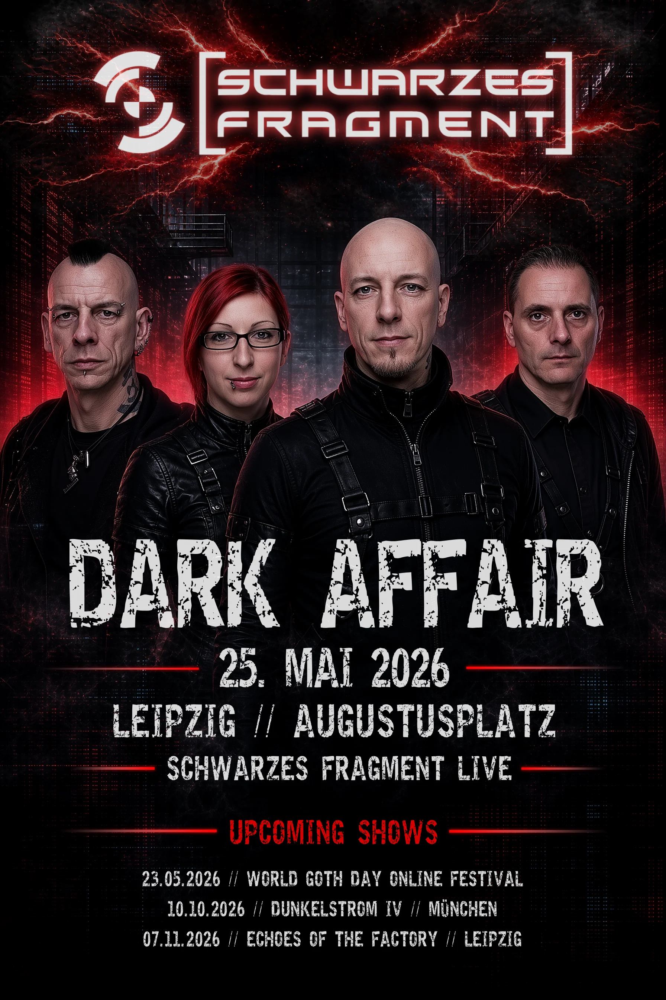

Dark Affair
Schwarzes Fragment · u. a. / and more
Augustusplatz · Leipzig
Vergangen / Past
Über den Abend / About the evening
Open-Air-Auftritt von Schwarzes Fragment auf dem Augustusplatz im Rahmen des Dark Affair Festivals — als Teil der Leipziger Dark-Scene-Programmation am Pfingstmontag des WGT-Wochenendes.
Open-air performance by Schwarzes Fragment at Augustusplatz as part of the Dark Affair Festival — part of the Leipzig dark-scene programme on Whit Monday of the WGT weekend.
Festival-Lineup / Festival Lineup
Freitag, 22. Mai 2026 / Friday, 22 May 2026
CON:TER · Graf Vlad · Francis Hunter · Mystery of Dawn · Wolfstavar
Samstag, 23. Mai 2026 / Saturday, 23 May 2026
Abyss of Hel · Ambiviolenz · Tension Control · ANTIAGE · MINUSHEART
Sonntag, 24. Mai 2026 / Sunday, 24 May 2026
Das Fortleben · urbandoned · Bad Therapy · Tilly Electronis · Shosta
Pfingstmontag, 25. Mai 2026 / Whit Monday, 25 May 2026
Arda Lindesti · Elende Leiber · Schwarzes Fragment
Wo & Wann / Where & When
Augustusplatz
04109 Leipzig · Deutschland / Germany
Montag, 25. Mai 2026 / Monday, 25 May 2026
Wer ist Schwarzes Fragment? / Who is Schwarzes Fragment?
Schwarzes Fragment ist das live-erprobte Dark-Electro-/EBM-Projekt aus München & Leipzig — melodisch, energetisch, tanzflächentauglich.
Schwarzes Fragment is the live-proven Dark Electro / EBM project from Munich & Leipzig — melodic, high-energy, dancefloor-ready.